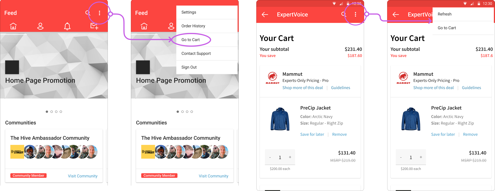

Improving the Android experience
Adding a cart button, designing a profile menu, and other additional improvements
Duration
6 weeks
Team
Rachel Michelson, with mentorship from Isaac Kulka
Role
Full stack product designer
Skills
Figma, Agile development
Problem
Users had to go into a kabob menu in order to go to their cart. On other screens, this kabob menu only held two options - Refresh, and Go to Cart.

Solution
Add a cart button, eliminate the kabob menu and replace it with a profile menu.
Final designs
I pulled the action for a user to access their cart out in the form of an icon.
However, in order to avoid clutter, I eliminated the kabob menu and placed its options within a menu that appears before a user's profile screen. Users can swipe down to refresh on select pages.
This new flow is more consistent with the ExpertVoice mobile web experience.
I also moved the action to "Refer an Expert" from the primary navigation to this new menu, as it is more of a secondary action.
Finally, I brought the top navigation bar down and adjusted the color scheme to be more consistent with the ExpertVoice iOS experience.
However, in order to avoid clutter, I eliminated the kabob menu and placed its options within a menu that appears before a user's profile screen. Users can swipe down to refresh on select pages.
This new flow is more consistent with the ExpertVoice mobile web experience.
I also moved the action to "Refer an Expert" from the primary navigation to this new menu, as it is more of a secondary action.
Finally, I brought the top navigation bar down and adjusted the color scheme to be more consistent with the ExpertVoice iOS experience.